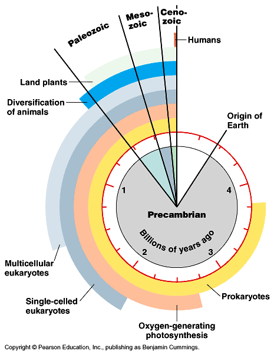
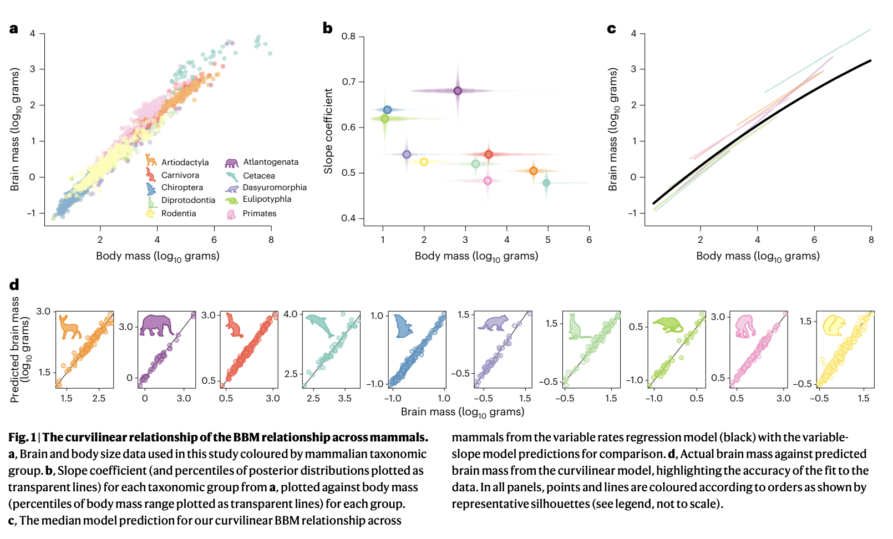
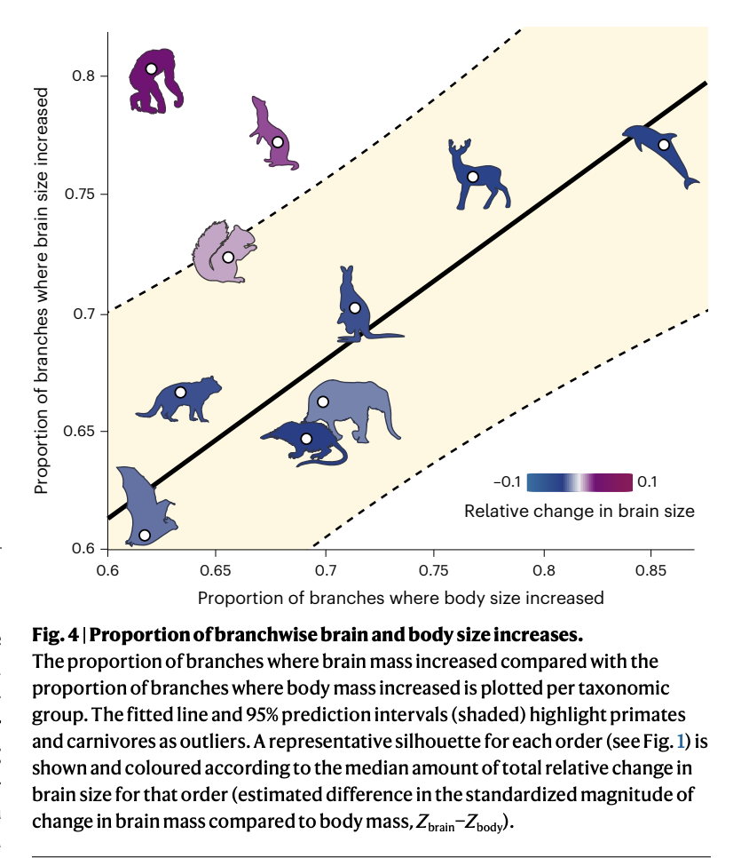
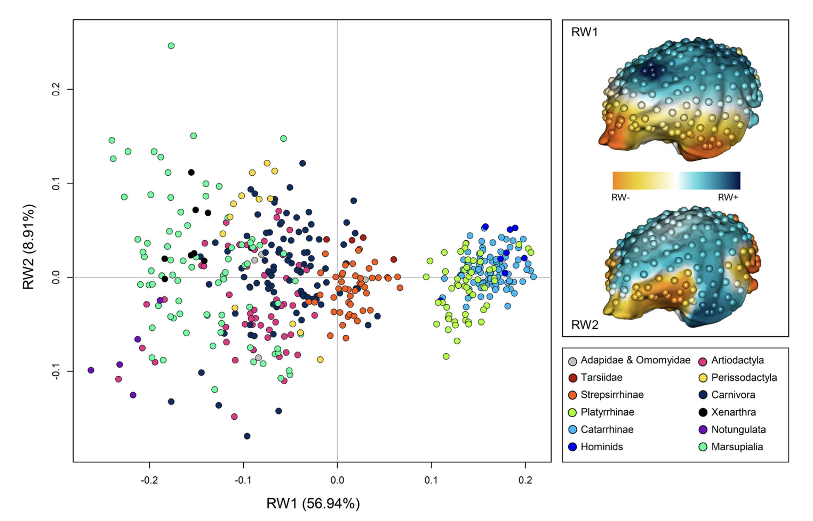
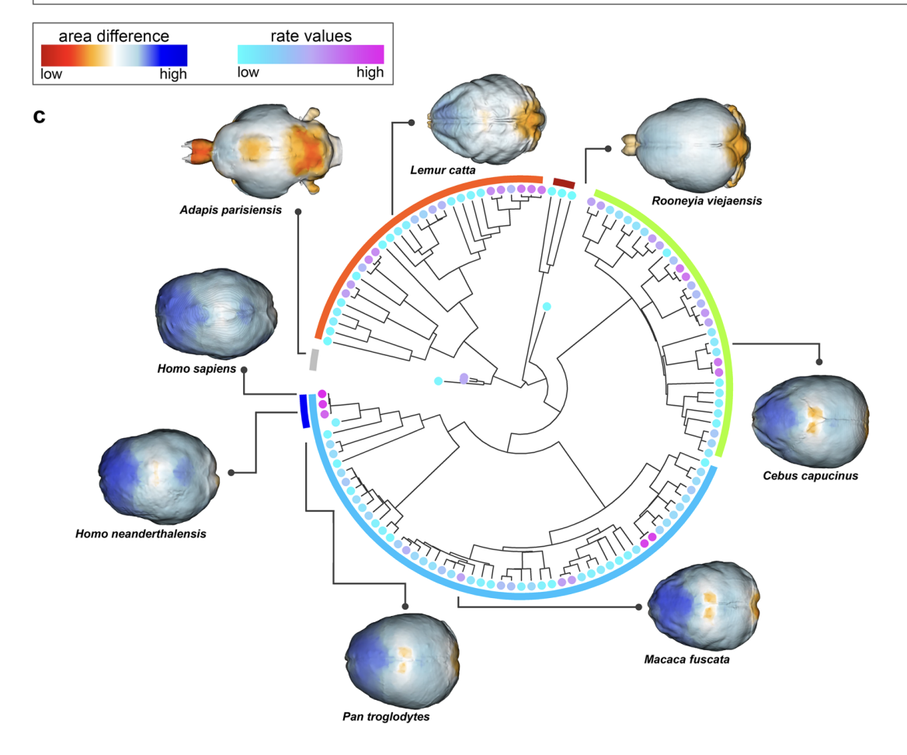
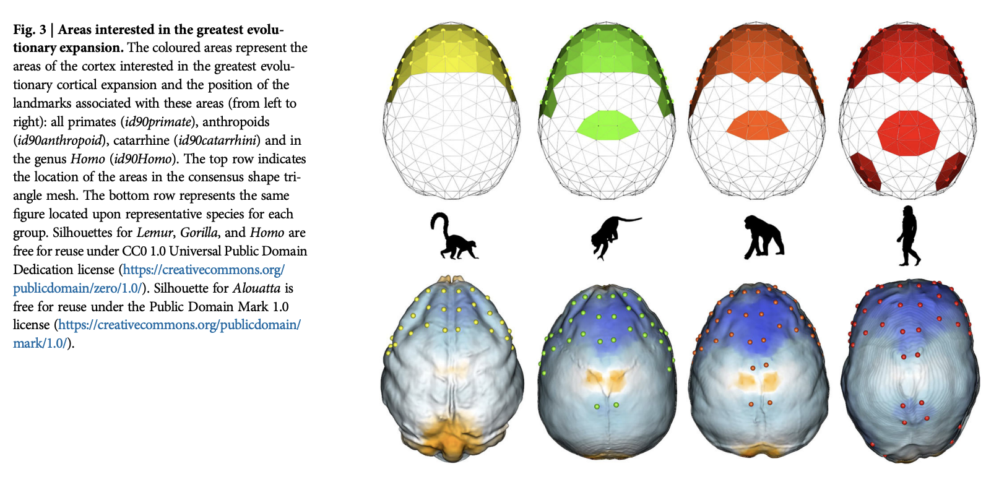

Evolution
Evolution of Nervous Systems
Public acceptance of evolution

- In U.S., majority now “accept”
- Increase over last decade

Types of evidence
- Fossil
- Fossil dating
- Geological
- Where fossils are found relative to one another
- How long it takes to form layers
- Genetic
- Rates of mutation
- Anatomical
- Homologous structures across species
Nothing in Biology Makes Sense except in the Light of Evolution
“Seen in the light of evolution, biology is, perhaps, intellectually the most satisfying and inspiring science. Without that light, it becomes a pile of sundry facts some of them interesting or curious, but making no meaningful picture as a whole.”
Dobzhansky (1973)
Why Gilmore thinks the theory so controversial (in the U.S.)
- Contradicts verbatim/non-metaphorical reading of some religious texts
- Makes humans seem less special
- Time scales involved beyond human experience
- Scientific method vs. other ways of knowing
- Found in nature ≠ good for human society
- Few negative consequences of ‘disbelief’
- U.S. culture individualistic, skeptical, anti-elitist, anti-intellectual
- Lower levels of religious belief among U.S. scientists
- Politics
- A minority of citizens support teaching evolution-only
- Majority of classroom teachers aren’t strong advocates
A structural equation model indicates that increasing enrollment in baccalaureate-level programs, exposure to college-level science courses, a declining level of religious fundamentalism, and a rising level of civic scientific literacy are responsible for the increased level of public acceptance.
Miller et al. (2021)
Evolution and development
Ontogenesis and phylogenesis
- Ontogenesis
- Development within lifetimes, history of individuals
- Phylogenesis
- Change across lifetimes, history of species
Ontogeny does not recapitulate phylogeny (Haeckel), but…

Complex multicellular life emerged “recently”


Nervous system architectures
How nervous systems differ
- Body symmetry
- radial
- bilateral
An animal with a nerve “net”
- Segmentation
- Cephalization (concentration of sensory & neural structures in anterior portion of body)
- Encasement in bone (vertebrates)
- Centralized vs. distributed function
Cephalopods have “intelligent arms”
The essentials of biological computation
- Ingestion
- Defense
- Reproduction

Information processing universals
- Sense/detect via sensors
- Specialize by information source/type
- Specialize by target location
- Interoceptive
- Exteroceptive
- Analyze, evaluate, decide
- Current state
- World
- Organism
- Current goals
- Past state(s)
- Current state
- Act
- Move body
- Approach/avoid
- Manipulate
- Ingest
- Signal
- Change physiological state
- Move body
From nerve net to nerve ring, nerve cord, and brain


- Neurons and nervous systems 520-570 M years old
- Diverse nervous systems show developmental similarities at molecular level
Vertebrate CNS organization


{kind=link}

Cerebral cortex a target of selection

| Structural measure | Non-human comparison | Human |
|---|---|---|
| Cortical gray matter %/tot brain vol | insectivores 25% | 50% |
| Cortical gray + white | mice 40% | 80% |
| Cerebellar mass | primates, mammals 10-15% | 10-15% |
- Evidence for greater gray and white matter (relative to total brain volume) in human cerebral cortex


Take homes
- Brain sizes scale with body size
- Brain sizes (more or less) scale with animal class (more or less)
Old story
- Within mammals, human brains bigger than expected
- Higher encephalization quotient – deviation from species-typical norm
- Humans have larger cerebral cortical gray + white matter than comparable mammals
vs. New story
- Does brain size/mass matter (that much)?
- “Size matters” (brain mass) presumes similarity among brains at micro-level
- Big (large mass) brains arise in multiple mammalian lineages
- Body sizes tend to increase over evolutionary time


- # of cortical neurons possibly more important difference than brain mass
- The primate advantage -> more cortical neurons, but not larger neurons & not more neurons in cerebellum
- Human brain just scaled up (non-ape) primate brain

- Primate body sizes grew relatively less than brain sizes

# of cortical (or in birds, pallidum) neurons predicts “cognition”?

Selection pressures
The Human Advantage (Herculano-Houzel, 2016)
- Brain
- More neurons in cerebral cortex than other mammals
- Behavior
- Less time spent foraging
- Higher quality/more energetically dense food
- Higher food availability
- Cultural factors (agriculture + cooking), see also (Wrangham, 2009)
- Less time spent foraging
A further human advantage

What cortical areas were selected?
Although intense research effort is seeking to address which brain areas fire and connect to each other to produce complex behaviors in a few living primates, little is known about their evolution, and which brain areas or facets of cognition were favored by natural selection. By developing statistical tools to study the evolution of the brain cortex at the fine scale, we found that rapid cortical expansion in the prefrontal region took place early on during the evolution of primates. In anthropoids, fast-expanding cortical areas extended to the posterior parietal cortex. In Homo, further expansion affected the medial temporal lobe and the posteroinferior region of the parietal lobe.
Melchionna et al. (2025)


